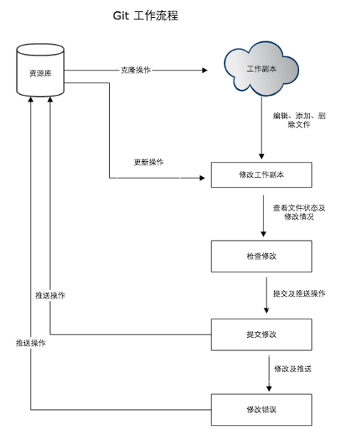

Git 笔记
Git 笔记
Git 工作流程
Git 一般工作流程如下：
- 克隆 git 资源/新建 git 仓库 作为工作目录
- 添加或修改文件
- 如果其他人修改了，你可以更新资源
- 在提交前查看修改
- 提交修改
- 在修改完成后，如果发现错误，可以撤回提交并再次修改提交

Git 工作区、暂存区和版本库
工作区：工作目录
暂存区(index/stage)：一般存放在.git/index中
版本库：.git隐藏目录

左侧为工作区，右侧为版本库，版本库中标记 index 的位置为暂存区，标记 master 的是 master 分支代表的目录树。
图中我们可以看出此时 HEAD 实际是指向 master 分支的一个”游标”。所以图示的命令中出现 HEAD 的地方可以用 master 来替换。
图中的 objects 标识的区域为 Git 的对象库，实际位于 .git/objects目录下，里面包含了创建的各种对象及内容。
当对工作区修改（或新增）的文件执行 git add 命令时，暂存区的目录树被更新，同时工作区修改（或新增）的文件内容被写入到对象库中的一个新的对象中，而该对象的ID被记录在暂存区的文件索引中。
当执行提交操作git commit时，暂存区的目录树写到版本库（对象库）中，master 分支会做相应的更新。即 master 指向的目录树就是提交时暂存区的目录树。
当执行 git reset HEAD 命令时，暂存区的目录树会被重写，被 master 分支指向的目录树所替换，但是工作区不受影响。
当执行 git rm --cached <file>命令时，会直接从暂存区删除文件，工作区则不做出改变。
当执行 git checkout . 或者 git checkout -- <file>"命令时，会用暂存区全部或指定的文件替换工作区的文件。这个操作很危险，会清除工作区中未添加到暂存区的改动。
当执行 git checkout HEAD .或者 git checkout HEAD <file> 命令时，会用 HEAD 指向的 master 分支中的全部或者部分文件替换暂存区和以及工作区中的文件。这个命令也是极具危险性的，因为不但会清除工作区中未提交的改动，也会清除暂存区中未提交的改动。
创建仓库
git init，初始化一个 git 仓库，默认在当前目录创建，也可以使用git int <directory>在指定目录创建。
创建完成后，新的仓库下会出现.git目录，git 需要的数据和资源存放在这里。如果有想要加入版本控制的文件，需要先使用git add对这些文件进行跟踪，然后提交。
1 | git add *.c |
git clone，从现有仓库拷贝项目，格式为git clone <repo>，如果要克隆到指定的目录，使用git clone <repo> <directory>
基本操作
| 命令 | 作用 |
|---|---|
git init <directory> |
在当前目录初始化仓库或者在指定目录初始化仓库 |
git clone <repo> |
克隆指定仓库 |
git add <file> |
将指定文件添加到缓存 |
git status |
查看项目状态 |
git diff |
查看项目详细信息 |
git commit |
将缓存区的内容添加到仓库中 |
git config |
配置用户名或邮箱地址 |
git reset HEAD<file> |
取消已缓存的内容 |
git rm <file> |
删除文件并从已跟踪的文件清单中清除。如果删除之前修改过并且已经放到暂存区，需要添加-f。如果仅仅想从已跟踪的文件清单中清楚使用--cache |
git mv |
移动或重命名一个文件、目录或软链接 |
分支管理
| 命令 | 作用 |
|---|---|
git branch |
列出当前分支，使用git branch <name>创建新分支 |
git checkout <branch> |
切换到另一个分支，使用-b选项创建新分支并切换到该分支，使用-d选项删除分支 |
git merge <branch> |
合并分支 |
查看提交历史
使用git log查看提交历史，--oneline查看简洁版本，graph查看历史中什么时候出现分支，--reverse逆向显示，author查看指定用户的提交日志，--since和--before指定时间。
标签
项目到达一个截断，可以使用git tag打上标签
-a使用带注解的标签，使用不带参数的命令查看所有标签，使用-m指定信息，使用-s添加PGP签名标签。